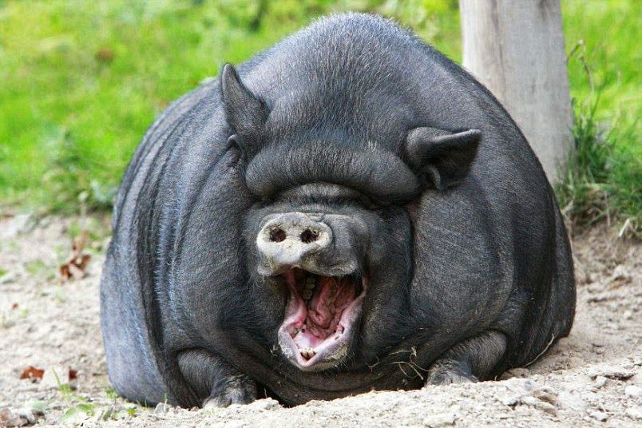

궁딩이 제국>
- 궁디제국의 대마왕
- 돼찌(궈네진들)
- 눙굴이어
HTML
Ctrl + O : 웹페이지에 파일 불러오기 단축키
Hypertext Markup Language (HTML) is
the standard markup language for creating web pages

돼찌모찌이다.

햄찌모찌이다.
1. 개요[편집]
소목 멧돼지과에 속하는 가축으로 학명은 Sus scrofa
domesticus. 약 1,000품종가량이 존재한다고 한다.
This is a paragraph.
This is a paragraph.
This is a paragraph.